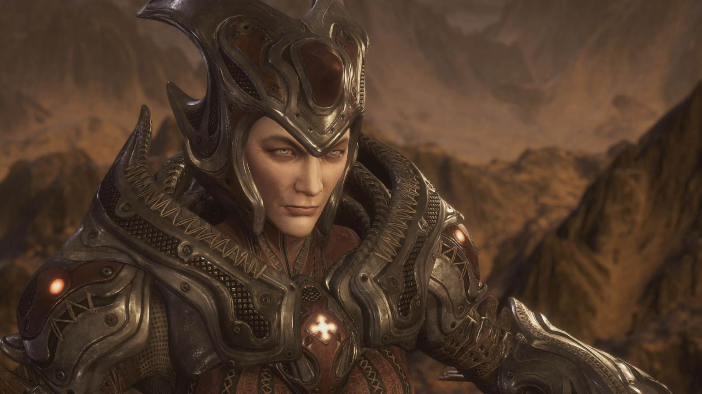

La Reina Myrrah fue la principal líder de la Horda Locust, siendo la cabeza y eje del sistema de organización social de los locust. Curiosamente ella es humana, pero a pesar de esto representaba el centro de la devoción y alabanzas de los locust.
